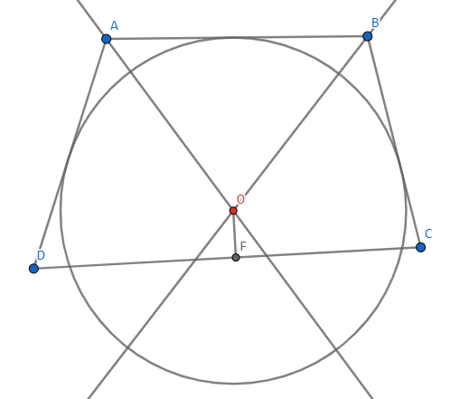
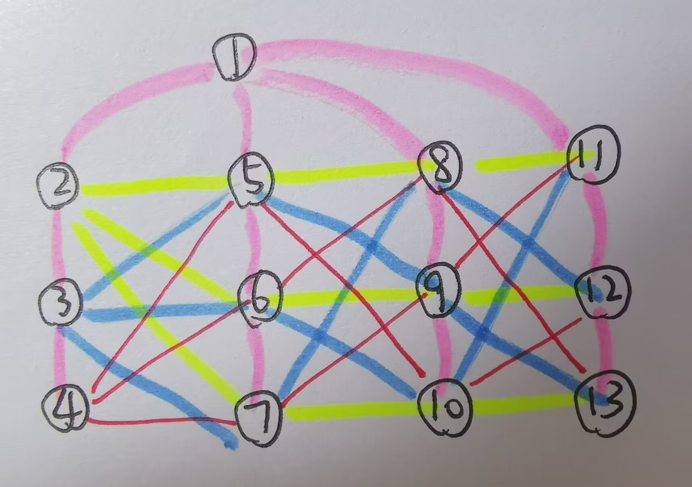
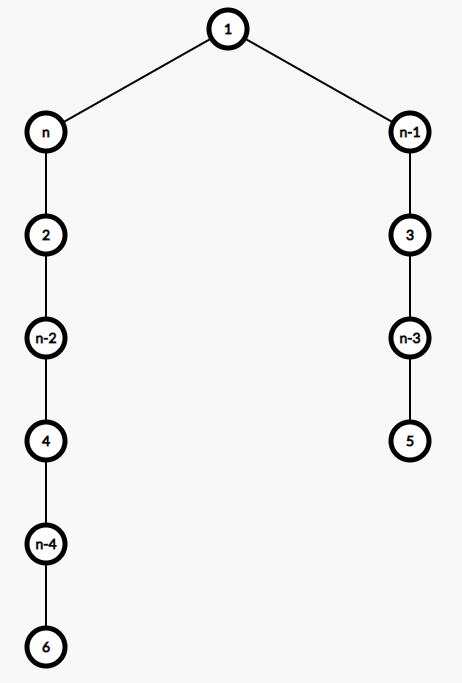
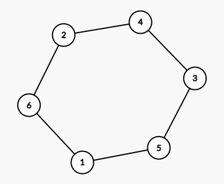
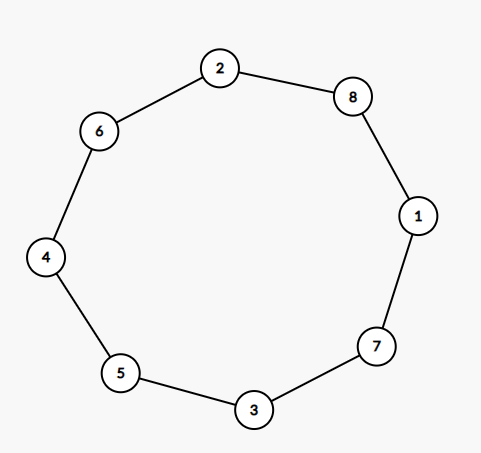
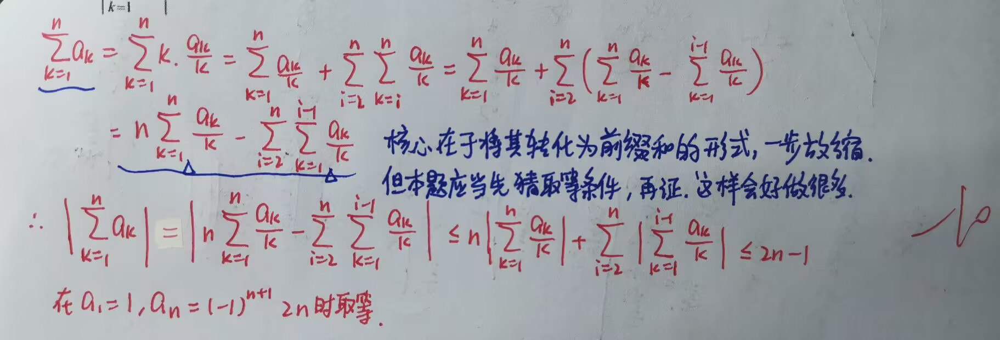
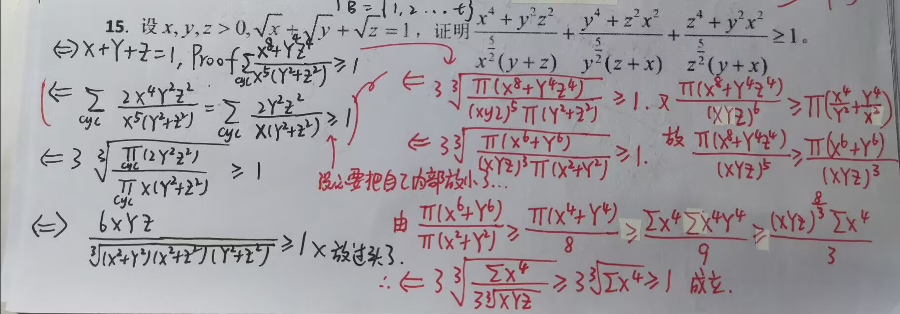
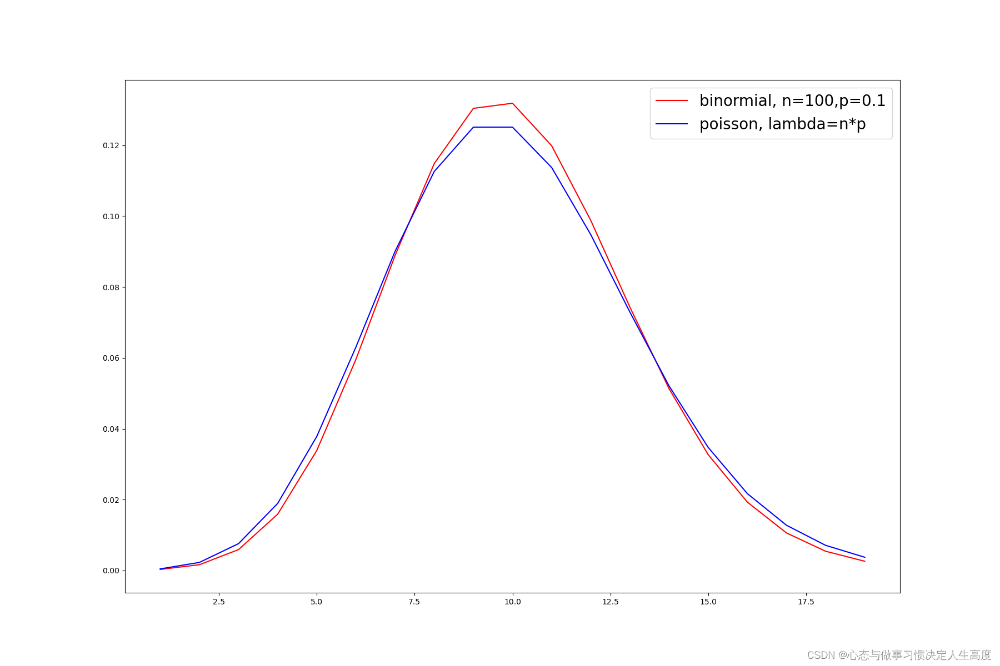
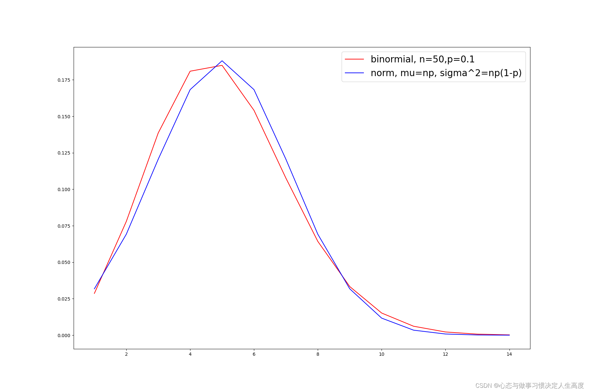

高中竞赛·合集⚓︎
记录一些高中数学竞赛题目的思考与解答。
2022.08~2024.06，杭州二中 小 Z
全国高中数学联赛浙江赛区初赛⚓︎
完成情况（2012 – 2022）
目前做了 2012~2022 年的真题，完成于 2024.09.14。下面按年份列出各题得分与部分题目的解答。
- 2012：180 / 200
- 2013：179 / 200
- 2014：200 / 200
- 2015：129 / 200
- 2016：193 / 200
- 2017：172 / 200
- 2018：174 / 200
- 2019：119 / 150
- 2020：154 / 200
- 2021：75 / 100
- 2022：114 / 150
2012 年浙江赛区初赛⚓︎
第 21 题
设圆 \(O_4\) 与圆 \(O_1\)，圆 \(O_1\) 与圆 \(O_2\)，圆 \(O_2\) 与圆 \(O_3\)，圆 \(O_3\) 与圆 \(O_4\) 分别外切于 \(P_1,P_2,P_3,P_4\)，试证：
(1) \(P_1,P_2,P_3,P_4\) 四点共圆；
(2) 四边形 \(O_1O_2O_3O_4\) 是某个圆的外切四边形；
(3) 该圆的半径不超过四边形 \(P_1P_2P_3P_4\) 的外接圆的半径。
个人解答
(1) 平凡，用对角和为 \(180°\) 即可。
(2) 我们先证一个引理：
引理 若四边形 \(\mathrm{ABCD}\) 满足 \(\mathrm{|AB|+|CD|=|AD|+|BC|}\)，则它有内接圆。反之亦然。
证明 必要性显然，下证充分性。反证法，假设它不存在内接圆。我们先作 \(\angle \mathrm{A}\) 和 \(\angle \mathrm{B}\) 的角平分线，作出与三边相切的圆。

过 \(O\) 作 \(\mathrm{OF}\perp \mathrm{DC}\)，则 \(\mathrm{OF}\neq R\)。
- 若 \(\mathrm{OF}<R\)，则 \(\mathrm{|AB|+|CD|>|AD|+|BC|}\)，矛盾；
- 若 \(\mathrm{OF}>R\)，则 \(\mathrm{|AB|+|CD|<|AD|+|BC|}\)，矛盾。
综上，它存在内接圆，即 \(\mathrm{OF}=R\)。\(\square\)
回到本题，易知四边形 \(O_1O_2O_3O_4\) 对边和相等，因此它是某个圆的外切四边形。
(3) 显然。
2013 年浙江赛区初赛⚓︎
第 20 题
设 \(x\in \mathbb N\) 满足 \(\left(\frac{1+x}{x}\right)^{2013}<\frac{2014}{2013}\)，数列 \(\{a_1,a_2,\cdots,a_{2013}\}\) 是公差为 \(x^{2013}\)，首项 \(a_1=(x+1)^2x^{2012}-1\) 的等差数列；数列 \(\{b_1,b_2,\cdots,b_{2013}\}\) 是公比为 \(\frac{1+x}{x}\)，首项 \(b_1=(x+1)x^{2013}\) 的等比数列，求证：\(b_1<a_1<b_2<\cdots<a_{2012}<b_{2013}\)。
参考解答 易知 \(\begin{cases}a_n=(x+1)^2 x^{2012}-1+(n-1)x^{2013} \\ b_n=(x+1)^nx^{2014-n}\end{cases}\)，于是 \(b_{n+1}-b_n=x^{2013} \left(\frac{1+x}{x}\right)^n\)。
先挑软柿子捏，\(b_{n+1}>a_n\) 直接归纳就能证明白。首先 \(b_2-a_1=1>0\)，假设 \(b_n>a_{n-1}\) 成立，则：
对于 \(a_n>b_n\)，直接归纳放缩不够，我们考虑配上一个系数，证 \(a_n-b_n>x^{2013}\frac{2014-n}{2013}\)。
首项 \(a_1-b_1=x^{2013}+x^{2013}-1\ge x^{2013}\) 成立，假设 \(a_{n-1}-b_{n-1}>x^{2013}\frac{2014-(n-1)}{2013}\) 成立，则：
因此命题成立。
第 21 题
设 \(a,b,c\in \mathbb R^+\)，\(ab+bc+ca\ge 3\)，证明：
个人解答 等价于 \((a^3+b^3+c^3)(a^2+b^2+c^2)\ge 9\)，又 \(a^2+b^2+c^2\ge ab+bc+ca=3\)，因此只需要管 \(a^3+b^3+c^3\)。
由赫尔德不等式，
因此原命题成立。
2014 年浙江赛区初赛⚓︎
第 17 题
有一快递公司承担某地区 \(13\) 个城市之间的快递业务，如果每个快递员最多只能承接 \(4\) 个城市之间的快递业务，要使每两个城市之间至少有 \(1\) 名快递员，那么此快递公司最少需要 ___ 名快递员。
个人解答 先求理论下界，显然是 \(\frac{\binom{13}{2}}{\binom{4}{2}}=13\) 名，下面考虑构造。

将 \(13\) 个城市分割成 \((1);(2,3,4);(5,6,7);(8,9,10);(11,12,13)\) 四类，先通过粉色路线将同一类内部连通。接着，以 \((2,3,4)\) 为起点，\(2\) 出发的都是往右走，\(3\) 出发的都是往右下一格，\(4\) 出发的都是往右下两格。容易发现它们形成的边互不重叠，可达下界。
2015 年浙江赛区初赛⚓︎
第 5 题
已知等腰直角 \(\triangle \mathrm{PQR}\) 的三个顶点分别在等腰直角 \(\triangle \mathrm{ABC}\) 的三边上，记 \(\triangle \mathrm{PQR},\triangle \mathrm{ABC}\) 的面积为 \(S_{\triangle \mathrm{PQR}},S_{\triangle \mathrm{ABC}}\)，则 \(\frac{S_{\triangle \mathrm{PQR}}}{S_{\triangle \mathrm{ABC}}}\) 的最小值为 ___。
第 18 题
已知数列 \(\{a_n\},\{b_n\}\) 满足 \(a_1>0,b_1>0\)，\(\begin{cases} a_{n+1}=a_n+\frac{1}{b_n} \\ b_{n+1}=b_n+\frac{1}{a_n}\end{cases}\ (n\in \mathbb N^*)\)，证明：\(a_{50}+b_{50}>20\)。
参考解答 第一想法肯定是将两式拼凑起来。相加，\(\frac{1}{a_n}+\frac{1}{b_n}>\frac{4}{a_n+b_n}\)，但无济于事。相乘：
想要凑出 \(a_n+b_n\)，现在有 \(a_nb_n\)，因此需要再凑 \(a_n^2+b_n^2\)。两式平方相加：
因此 \((a_n+b_n)^2=a_n^2+b_n^2+2a_nb_n>8n\)，故 \(a_n+b_n>\sqrt{8n}\)。此题 \(n=50\)，故 \(a_n+b_n>20\)。
第 19 题（附加 1）
已知数列 \(\{a_n\}\) 满足 \(a_1=1\)，\(a_{n+1}=3a_n+2\sqrt{2a_n^2-1}\ (n\in \mathbb N^*)\)。
(I) 证明：\(\{a_n\}\) 是正整数数列；
(II) 是否存在 \(m\in \mathbb N^*\)，使得 \(2015 \mid a_m\)，并说明理由。
2016 年浙江赛区初赛⚓︎
第 14 题
若关于 \(x,y\) 的方程组 \(\begin{cases} \sin x=m \sin^3y \\ \cos x=m \cos^3y\end{cases}\) 有实数解，则正实数 \(m\) 的取值范围为 ___。
个人解答 两式分别平方相加，得到 \(m^2(\sin^6y+\cos^6y)=1\)，于是问题转为求 \(\sin^6 y+\cos^6y\) 的最值。
- 最大值：\(\sin^6y+\cos^6y\le \sin^2y+\cos^2y=1\)，取 \(y=\frac{\pi}{2}\) 即可；
- 最小值：\(\sin^6 y+\cos ^6y=(\sin ^2y)^3+(\cos^2y)^3\ge 2\left(\frac{\sin^2y+\cos^2y}{2}\right)^3=\frac{1}{4}\)，取 \(y=\frac{\pi}{4}\) 即可。
因此 \(m^2\in [1,4]\)，故 \(m\in [1,2]\)。容易验证原方程组确实可以达到理论最值。
2017 年浙江赛区初赛⚓︎
第 15 题
设 \(\sigma=\{a_1,a_2,\cdots,a_n\}\) 为 \(\{1,2,\cdots,n\}\) 的一个排列，记 \(F(\sigma)=\sum\limits_{i=1}^{n} a_ia_{i+1}\)（\(a_{n+1}=a_1\)），求 \(\min F(\sigma)\)。
个人解答 本题应当先猜后证，不然还真找不到啥突破口。一个直观的感受就是，\(n\) 的旁边最好放上 \(1,2\)，这样能把乘积降到最低。然后 \(n-1,n-2\) 分别放在 \(1,2\) 边上（越大配对越小），这样每次都能让"大数"被"小数"乘，让答案尽可能小。因此它的构造应当形如：

下面我们通过调整法来说明它。不妨 \(a_1=n\)。若 \(a_2\neq 1\)，设 \(a_j=1\ (3\le j\le n)\)，翻转 \(a_{[2,j]}\)，则：
因此翻转不劣，\(a_2=1\)。若 \(a_n\neq 2\)，设 \(a_j=2\ (3\le j\le n-1)\)，翻转 \(a_{[j,n]}\)，则：
按此过程可将所有数依序调整至最优位置。考虑如何计算答案，直接算不容易，考虑递推。
设 \(|\sigma|=n\) 时的 \(\min F(\sigma)=T_n\)，从 \(T_{n-2}\to T_n\) 的过程中：


以 \(n=8\) 为例，\(T_6\to T_8\) 的过程是将 \(1\)–\(6\) 断开，全体 \(+1\)，然后两头接上 \(1,8\)，因此：
拆项，用平方和公式即可：
2018 年浙江赛区初赛⚓︎
第 9 题
设 \(x,y\in \mathbb R\)，满足 \(x-6\sqrt{y}-4\sqrt{x-y}+12=0\)，则 \(x\) 的取值范围为 ___。
个人解答 配方得 \((\sqrt{x-y}-2)^2+(\sqrt{y}-3)^2=1\)，因此设 \(\begin{cases}\sqrt{x-y}-2=\cos \theta\\ \sqrt{y}-3=\sin\theta\end{cases}\)，可得
第 13 题
设实数 \(x_1,x_2,\cdots,x_{2018}\) 满足 \(x_{n+1}^2\le x_nx_{n+2}\ (n=1,2,\cdots,2018)\) 和 \(\prod\limits_{i=1}^{2018}x_i=1\)，证明：
个人解答 首先我们不知道 \(x_n\) 的正负，得先分析。注意到 \(x_nx_{n+2}\ge x_{n+1}^2>0\)，因此 \(x_n\) 与 \(x_{n+2}\) 同正负。
进而知 \(x_1,x_3,\cdots,x_{2017}\) 同正负，\(x_{2},x_{4},\cdots,x_{2018}\) 同正负。不妨 \(x_1>0\)（否则所有 \(x_n\) 取相反数）。
若 \(x_2<0\)，则 \(\prod\limits_{i=1}^{2018}x_i<0\)，矛盾，因此 \(x_n>0\)。
分析完正负性就可以得到 \(\frac{x_{n+1}}{x_n}\le \frac{x_{n+2}}{x_{n+1}}\)，因此 \(x_{1009}x_{1010}\le x_{1008}x_{1011}\le \cdots\)，故 \(x_{1009}x_{1010}\le 1\)。
个人反思 一定要看清题目的定义域，本题是实数域，没规定正负，不要上手直接两边同除 \(x_{n}x_{n+1}\) 了！
2019 年浙江赛区初赛⚓︎
第 4 题
设三条不同的直线：
则它们相交于一点的充分必要条件为 ___。
个人解答 三条直线交于同一点，相当于 \(l_3\) 能被 \(l_1,l_2\) 线性表示。设 \(c=a+b+1\)，考虑行列式：
Case 1 \(a+b+c=0\)，即 \(a+b=-\frac{1}{2}\)，显然成立；
Case 2
因此 \(a=b=-1\)，与 \(l_1,l_2,l_3\) 不同矛盾，舍去。
第 7 题
设 \(f(x)=\frac{1010x+1009}{1009x+1010}\)，定义 \(f^{(1)}(x)=f(x),\ f^{(i)}(x)=f(f^{(i-1)}(x))\ (i\ge 2)\)，则 \(f^{(n)}(x)=\) ___。
个人解答
第 13 题
设 \(\mathcal{X}\) 是有限集，\(t\) 为正整数，\(\mathcal{F}\) 是包含 \(t\) 个子集的子集族：\(\mathcal F=\{A_1,A_2,\cdots,A_t\}\)。
如果 \(\mathcal F\) 中的部分子集构成的集族 \(\mathcal S\) 满足：对 \(\mathcal S\) 中任意两个不相等的子集 \(A,B\)，\(A\subset B,B\subset A\) 均不成立，则称 \(\mathcal S\) 为反链。
设 \(\mathcal S_1\) 为包含集合最多的反链，\(\mathcal S_2\) 是任意反链。证明存在 \(\mathcal S_2\) 到 \(\mathcal S_1\) 的单射 \(f\)，满足 \(\forall A\in \mathcal S_2\)，\(f(A)\subset A\) 或 \(A\subset f(A)\) 成立。
参考解答 一眼 Dilworth 定理，最小链覆盖 = 最长反链。但我们得把它形式化描述出来。
如果 \(\mathcal F\) 中的部分子集构成的集族 \(\mathcal P\) 满足：对于 \(\mathcal P\) 中任意两个不相等的子集 \(A,B\)，有 \(A\subset B\) 或 \(B\subset A\) 之一成立，则称 \(\mathcal P\) 为链。
设 \(|\mathcal S_1|=r\)，由 Dilworth 定理知 \(\mathcal F\) 可以划分成 \(r\) 个链 \(\mathcal P_i\ (1\le i\le r)\) 的并（证明见下）。
考虑 \(\mathcal S_1\)，由于每条链中最多只能容一个元素（否则两个元素存在包含关系），因此每条链中恰好有一个 \(\mathcal S_1\) 中的元素。再考虑 \(\mathcal S_2\)，每条链中至多有一个 \(\mathcal S_2\) 中的元素，因此一个很 trivial 的单射 \(f\) 便是：将每个 \(\mathcal S_2\) 中的元素映射到它所在链的 \(\mathcal S_1\) 元素即可。
Dilworth 定理 设 \(\mathcal F\) 是有限偏序集，若 \(\mathcal S\) 为最长反链，则 \(\mathcal F\) 可被划分为 \(|\mathcal S|\) 条链 \(\mathcal P_i\) 的并。
证明 考虑按 \(|\mathcal F|\) 归纳。在 \(|\mathcal F|=1\) 时，显然成立。设命题对 \(|\mathcal F|-1\) 成立。
Case 1 若存在最长反链 \(\mathcal S\)，使得 \(\begin{cases}\exists A\in \mathcal F,B\in \mathcal S,\text{s.t.}\ A\subset B \\ \exists A\in \mathcal F,B\in \mathcal S,\text{s.t.}\ B\subset A\end{cases}\)。我们将其记为：
\[ \mathcal F_1=\{A\in \mathcal F \mid \exists B\in \mathcal S,\text{s.t.}\ A\subset B\},\quad \mathcal F_2=\{A\in \mathcal F \mid \exists B\in \mathcal S,\text{s.t.}\ B\subset A\} \]则 \(\mathcal F_1\cup \mathcal S,\ \mathcal F_2\cup \mathcal S\) 均是 \(\mathcal F\) 的真子集，由归纳假设知都可以拆成 \(r\) 个链的并，其中 \(\mathcal F_1\cup \mathcal S\) 中的链以 \(\mathcal S\) 中的元素开始，\(\mathcal F_2\cup \mathcal S\) 中的链以 \(\mathcal S\) 中的元素结束。因此这些链将 \(\mathcal F\) 划分为了 \(r\) 条链。
Case 2 不存在上述最长反链 \(\mathcal S\)，那么每条最长反链要么满足 \(\mathcal F_1=\emptyset\)，要么满足 \(\mathcal F_2=\emptyset\)。
- \(\mathcal F_1=\emptyset\)：\(\mathcal S\) 中的子集都是"极大"子集，即不是另一个 \(A_i\) 的子集；
- \(\mathcal F_2=\emptyset\)：\(\mathcal S\) 中的子集都是"极小"子集，即不真包含另一个 \(A_i\)。
从而至多有两条最长反链。
Case 2.1 如果"极大"子集反链与"极小"子集反链均为最长反链，则任取极大子集 \(A\) 以及极小子集 \(B\subset A\)，删去 \(A,B\)。由归纳假设，将剩下的集合划分成 \(r-1\) 条链，再加上链 \(B\subset A\) 即可。
Case 2.2 如果其中之一不是最长反链，不妨设"极大"子集反链为最长反链，任意去掉一个极大子集，由归纳假设知成立。\(\square\)
2020 年浙江赛区初赛⚓︎
第 9 题
一个正整数若能写成 \(20a+8b+27c\)（\(a,b,c\) 为非负整数）形式，则称它为"好数"。则集合 \(\{1,2,\cdots,200\}\) 中好数的个数为 ___。
个人解答 直接统计肯定不现实，铁算重。注意到若 \(x\) 是"好数"，则 \(x+8\) 也是"好数"，因此可以在 \(\bmod 8\) 意义下跑同余最短路，手玩结果如下：
| 余数 | 0 | 1 | 2 | 3 | 4 | 5 | 6 | 7 |
|---|---|---|---|---|---|---|---|---|
| 最小的"好数" | 8 | 81 | 74 | 27 | 20 | 101 | 54 | 47 |
| "好数" 的个数 | 25 | 15 | 16 | 22 | 23 | 13 | 19 | 20 |
因此总共有 \(153\) 个好数。
第 15 题
设 \(\{a_m\},\{b_n\}\) 为实数列，证明：
参考解答 对于 LHS，考虑配凑系数，用 Cauchy 不等式放缩：
内部两个和式对称，我们不妨考虑第一个：
与 RHS 对比，我们发现无非它多了一个 \(c_m\) 的系数，如果我们能证明 \(\forall m,\ c_m\le 2\)，本题就做完了。
而左边 \(<1\)，右边 \(>1\)，显然成立。
个人反思
-
Cauchy 不等式在 \(\sum\limits_{\text{tuple}}\)、\(\int\) 条件下仍适用。左式的 \(\left(\sqrt{m}+\sqrt{n}\right)^2\) 性质很差，果断拆掉，配凑 Cauchy 不等式的形式进行放缩。
疑惑：是如何想到凑 \(\left( \frac {m}{n}\right)^{\frac 14}\) 的呢？
-
疑惑：对系数 \(c_m\le 2\) 这部分，如何想到去构造这样一个裂项的呢？
2021 年浙江赛区初赛⚓︎
第 13 题
设 \(n\) 为给定的正整数，\(a_1,a_2,\cdots,a_n\) 为一列实数，满足对于每个 \(m\le n\)，都有 \(\left|\sum\limits_{k=1}^{m} \frac {a_k}{k}\right|\le 1\)，求 \(\left|\sum\limits_{k=1}^{n} a_k\right|\) 的最大值。

第 15 题
设 \(x,y,z>0\)，\(\sqrt{x}+\sqrt{y}+\sqrt{z}=1\)，证明：

参考解答 这个 \(\sqrt{x},\sqrt{y},\sqrt{z}\) 看起来很不舒服，换元为 \(X,Y,Z\)，则 \(X+Y+Z=1\)，求证：
由 Cauchy 不等式知：
故原命题加强为 \(3\sqrt[3]{\dfrac{\prod(X^6+Y^6)}{\prod(X^2+Y^2)}\cdot \dfrac{1}{(XYZ)^3}}\ge 1\)。再考虑这个乘积式，继续用 Cauchy 不等式：
因此原命题继续加强为显然成立的形式。
2022 年浙江赛区初赛⚓︎
第 14 题
设数列 \(\{a_n\}\) 满足 \(a_1>0,\ a_{n+1}=a_n+\frac{n}{a_n}\ (n\ge 1)\)，证明：
(1) 数列 \(\{a_n-n\}\ (n\ge 2)\) 单调递减；
(2) 存在一个常数 \(c\)，使得 \(\sum\limits_{k=1}^{n} \frac{a_k-k}{k+1}\le c\ (n\ge 2)\)。
个人解答 本题的 \(a_1\) 比较特殊，因为它是一个自设定，而 \(a_2\) 起是打钩函数生成的。后文均从 \(a_2\) 分析起。
(1) 只需证 \((a_{n+1}-(n+1))-(a_n-n)=\frac{n}{a_n}-1\le 0\)，即 \(a_n\ge n\)。容易归纳证明 \(a_n\ge n\ (n\ge 2)\)，因此成立。
(2) 换个说法就是，在既定数列 \(\{a_n\}\) 下，我们要证明 \(\sum\limits_{k=1}^{n} \frac{a_k-k}{k+1}\) 收敛。看到分母有 \(k+1\)，不难想到去构造裂项。设定 \(\lambda\)，满足 \(a_n-n\le \frac{\lambda}{n}\ (n\ge 2)\)。
这也就是说，\(x_n=n(a_n-n)\le \lambda\)，所以我们转而证明 \(\{x_n\}\) 的收敛性。我们寻找递推关系：
我们发现 \(x_{n+1}=R_nx_n\)，接着对 \(R_n\) 放缩：
蓝色部分的放缩是因为 \(a_n-n-1\) 的正负不确定，我们将其升到 \(a_n-n\) 才能进行下一步对分母的放缩。因此：
取 \(\lambda=x_2e^{\frac{2}{3}(a_2-2)}=2(a_2-2)e^{\frac{2}{3}(a_2-2)}\) 即可，\(\{x_n\}\) 收敛。
最后一步证明原命题是 trivial 的，\(\sum\limits_{k=1}^{n} \frac{a_k-k}{k+1}\le \frac{a_1-1}{2}+\sum\limits_{k=2}^{n} \frac{\lambda}{k(k+1)}<\frac{a_1-1}{2}+\frac{\lambda}{2}=c\)。
备注 官方解答给出的 \(\lambda\) 为 \(2(a_2-2) e^{a_2-1}\)，处理得比较粗糙，不过这题对这个界要求那么高，毕竟只需要证明它收敛即可。
个人反思 当时我都想到构造裂项这一步了，但就是不知道如何卡出一个合适的 \(\lambda\)，因为一直没敢往证明 \(\{x_n\}\) 收敛的方向想。后面的过程其实都蛮自然的，难点还是在前期思路的构建上。
第 15 题
设 \(\mathbf{f}: \mathbb N^{*}\to \mathbb N^{*}\) 满足，对于任意 \(m,n\)，\((m+n)\mid (f(m)+f(n))\) 成立。
(1) 若 \(\mathbf{f}\) 为整系数多项式，证明 \(\mathbf{f}\) 任意项的次数为奇数；
(2) 构造满足条件的非多项式映射 \(\mathbf{f}\)。
参考解答
(1) 设 \(f(x)=\sum\limits_{i=0}^{k} a_ix^i\ (a_i\in \mathbb Z,x\in \mathbb R)\)。考虑取大质数 \(p\)，取 \(m=t,n=p-t\)，则：
设定阈值 \(\lambda\)，对于所有 \(p>\lambda\)，都有 \(p\mid (f(t)+f(-t))\)。因为 \(p\) 有无穷多个，所以 \(f(t)+f(-t)\) 有无穷多质因子，故 \(f(t)+f(-t)=2\sum\limits_{i=2,\ i\text{ 为偶数}}^{k}a_it^i=0\)，故 \(a_i=0\ (i\text{ 为偶数})\)。为方便起见，取 \(\lambda=\max\{k+1,a_i\}\) 即可。
(2) 先给出一个引理：
引理 设 \(m_i\) 为正整数，则同余方程组
\[ \begin{cases} x\equiv a_1\pmod {m_1} \\ x\equiv a_2\pmod {m_2} \\ \quad\quad\quad \cdots\\ x\equiv a_n\pmod {m_n} \end{cases} \]有解当且仅当 \(\forall 1\le i<j\le n\)，\(\gcd (m_i,m_j)\mid (a_i-a_j)\)。
证明 归纳。\(n=2\) 即裴蜀定理，\(m_1x+a_1=m_2y+a_2\)。
若 \(n-1\) 成立，设 \(\begin{cases} x\equiv a_i\pmod {m_i} \\ x\equiv a_n\pmod {m_n}\end{cases}\) 有解 \(b_i\)，考虑同余方程组：
\[ \begin{cases} x\equiv b_1 &\pmod {\mathrm{lcm}(m_1,m_n)}\\ \quad\quad\quad \cdots\\ x\equiv b_{n-1} &\pmod {\mathrm{lcm}(m_{n-1},m_n)} \end{cases} \]下证 \(\forall 1\le i<j<n\)，\(\gcd(\mathrm{lcm}(m_i,m_n),\mathrm{lcm}(m_j,m_n))\mid (b_i-b_j)\)。
注意到 \(\gcd(\mathrm{lcm}(m_i,m_n),\mathrm{lcm}(m_j,m_n))=\mathrm{lcm}(\gcd(m_i,m_j),m_n)\)；由 \(\begin{cases}b_i\equiv a_n\pmod {m_n} \\ b_j\equiv a_n\pmod {m_n}\end{cases}\) 知 \(m_n\mid (b_i-b_j)\)；由 \(\begin{cases}b_i\equiv a_i\pmod {m_i}\\ b_j\equiv a_j\pmod{m_j}\end{cases}\) 且 \(\gcd(m_i,m_j)\mid (a_i-a_j)\) 知 \(\gcd(m_i,m_j)\mid (b_i-b_j)\)。故 \(\mathrm{lcm}(\gcd(m_i,m_j),m_n)\mid (b_i-b_j)\)。\(\square\)
归纳构造 \(f(x)\)：\(f(1)\) 随便取一个值。假设 \(f(1),\cdots,f(k-1)\) 已经构造好，考虑同余方程组：
由于 \(\begin{cases}\gcd(k\pm i,k\pm j) \mid (i-j) \mid (f(i)-f(j)) \\ \gcd(k\pm i,k\mp j)\mid (i+j)\mid (f(i)+f(j))\end{cases}\)，满足引理条件，因此存在 \(>k^k\) 的解，取为 \(f(k)\) 即可。由于 \(f(k)>k^k\)，因此 \(f(x)\) 为非多项式，故 \(\mathbf{f}\) 为非多项式映射。
全国高中数学联合竞赛⚓︎
完成情况
目前做了 2015、2018、2022 年（A 卷一试）的真题。下面按年份列出各题得分与部分题目的解答。
- 2015 A 卷一试：64+16+20+15 = 115
- 2015 B 卷一试：56+16+20+20 = 112
- 2018 A 卷一试：56+16+20+20 = 112
2018 年高联⚓︎
第 8 题
设整数数列 \(a_1,a_2,\cdots,a_{10}\) 满足 \(a_{10}=3a_1\)，\(a_2+a_8=2a_5\)，且
则这样的数列的个数为___。
个人解答 本题固然可以直接暴力枚举 \(a_1\in [5,9]\)，然后分类讨论，但是很麻烦，而且容易错。这里有个很简洁的做法，感觉还是蛮精彩的：
设差分数组 \(b_i=a_i-a_{i-1}\)，则
我们考虑 ② 式，设 \(\{b_3,b_4,b_5\}\) 中有 \(t\) 个 \(2\)，显然 \(\{b_6,b_7,b_8\}\) 中也有 \(t\) 个 \(2\)。
故 \((b_3,\cdots,b_8)\) 的方案数为 \(\sum\limits_{i=0}^{3}\binom{3}{i}^2=20\)，剩下 \((b_2,b_9,b_{10})\)，我们要满足 ① 式，只需要让它们三个的和为偶数，因此总方案数为 \(20\cdot 2^2=80\)。
个人反思 本题的解法有着映射的思想，非常巧妙的避开了繁琐的分类讨论，学习！
2022 年高联⚓︎
第 5 题
若四棱锥 \(\mathrm{P\text{-}ABCD}\) 的棱 \(\mathrm{AB},\mathrm{BC}\) 长均为 \(\sqrt{2}\)，其他各条棱长均为 \(1\)，则该四棱锥的体积为 ___。
想法 由 \(\mathrm{PA=PB=PC=PD}=1\)，我们可将平面 \(\mathrm{ABCD}\) 视为「以 \(P\) 为球心，半径为 \(1\) 的球」的一个切面，因此平面 \(\mathrm{ABCD}\) 四点共圆。
第 7 题
在平面直角坐标系中，椭圆 \(\Omega:\ \frac{x^2}{4}+y^2=1\)，\(P\) 为 \(\Omega\) 上的动点，\(A,B\) 为两个定点，其中 \(B\) 的坐标为 \((0,3)\)。若 \(\triangle \mathrm{PAB}\) 的面积的最小值为 \(1\)、最大值为 \(5\)，则线段 \(\mathrm{AB}\) 的长为 ___。
坑 我采用了仿射变换，令 \(\begin{cases}x'=x \\ y'=2y\end{cases}\)，转化为过 \((0,6)\) 的直线到圆 \(x^2+y^2=4\) 的距离问题。但要注意求出的 \(\mathrm{A'B'}\neq 2\mathrm{AB}\)，这是因为两个维度的伸缩因子不同。计算出来 \(\mathrm{A'B'}=4\)，直线斜率 \(k=\pm\sqrt{3}\)，我们得将其两维独立开，还原出 \(\mathrm{AB}=\sqrt{7}\)。
第 11 题
在平面直角坐标系中，双曲线 \(\tau:\ \frac{x^2}{3}-y^2=1\)。对平面内不在 \(\tau\) 上的任意一点 \(P\)，记 \(\Omega_P\) 为过点 \(P\) 且与 \(\tau\) 有两个交点的直线的全体。对任意直线 \(l\in \Omega_P\)，记 \(M,N\) 为 \(l\) 与 \(\tau\) 的两个交点，定义 \(f_P(l)=|\mathrm{PM}|\cdot |\mathrm{PN}|\)，若存在一条直线 \(l_0\in \Omega_P\)，满足：\(l_0\) 与 \(\tau\) 的两个交点位于 \(y\) 轴异侧，则对于任意直线 \(l\in \Omega_P\) 且 \(l\neq l_0\)，均有 \(f_P(l)>f_P(l_0)\)，则称 \(P\) 为"好点"。求所有好点所构成的区域的面积。
坑 \(l_0\) 需要满足交点位于 \(y\) 轴异侧，\(l\) 没这限制，不要读错题了。
想法 设点 \(P(u,v)\) 以及直线 \(l:\ y=k(x-u)+v\)，据此得到 \(f_P(l)=\left|\frac{k^2+1}{1-3k^2}(u^2-3v^2-3)\right|\)。
性质 对于双曲线 \(\tau\)，\(l\) 与 \(\tau\) 的两个交点位于 \(y\) 轴异侧当且仅当 \(|k|<\frac{b}{a}\)，即卡在渐近线斜率内。
证明 联立 \(\begin{cases}y=kx+m \\ \frac{x^2}{a^2}-\frac{y^2}{b^2}=1\end{cases}\)，得到 \(\Delta=\frac{4}{a^2b^2}(b^2-a^2k^2+m^2)\)，结合渐近线几何意义知 \(|k|<\frac{b}{a}\)。
之后按照 \(P\) 在双曲线两侧内、外分类讨论，易得围成的区域是一个斜 \(45°\)、边长为 \(2\) 的正方形。
第二题
设整数 \(n\ (n>1)\) 恰有 \(k\) 个互不相同的素因子，记 \(n\) 的所有正约数之和为 \(\sigma(n)\)，证明：\(\sigma(n)\mid (2n-k)!\)。
想法 设 \(n=\prod\limits_{i=1}^{k}p_i^{a_i}\)，记 \(S_i=\sum\limits_{j=0}^{a_i}p_i^j\)，则 \(\sigma(n)=\prod\limits_{i=1}^{k}S_i\)。
证明 \(\sigma(n)\mid (2n-k)!\) 可以从两个角度切入：
- 所有质因子上的指数都呈偏序关系；
- 考虑二分图，左部是 \(S_i\)，右部是 \(j\)，\(S_i\) 连 \(j\) 当且仅当 \(S_i\mid j\)，用 Hall 定理去判定。
在本题，用后者可做。欲证 \(\forall i\in [1,k]\)，\(|N(S_i)|\ge k\)，即 \((S_i+1)k\le 2n\)。
那我们放缩出 \(S_i\) 的上界，注意到 \(S_i=\sum\limits_{j=0}^{a_i}p_i^j\le \sum\limits_{j=0}^{a_i}\frac{p_i^{a_i}}{2^j}\le 2p_i^{a_i}-1\)，等价于证 \(p_i^{a_i}k\le n\)。
- 若 \(k=1\)，显然成立；
- 若 \(k>1\)，注意到 \(\forall t\in [1,k]\)，\(p_t^{a_t}\ge 2\)，因此 \(n\ge p_i^{a_i}\cdot 2^{k-1}\ge p_i^{a_i}k\)。
第三题
设 \(a_1,a_2,\cdots,a_{100}\) 是非负整数，同时满足以下条件：
(1) 存在正整数 \(k\le 100\)，使得 \(a_1\le a_2\le \cdots\le a_k\)，而当 \(i>k\) 时 \(a_i=0\)；
(2) \(\sum\limits_{i=1}^{100}a_i=100\)；
(3) \(\sum\limits_{i=1}^{100}i\cdot a_i=2022\)。
求 \(\sum\limits_{i=1}^{100}i^2\cdot a_i\) 的最小可能值。
想法 首先序列一定是 0 ... 0 a b ... z 0 ... 0（\(a\le b\le \cdots\le z\)）的形式，其次 \(k\) 不能 \(\le 20\)。
毛估估 \(\neq 0\) 的位置不多，容易试探出最优解 \(a_{19}=19,a_{20}=40,a_{21}=41\)，得到答案 \(40940\)。证明就对着它构造不等式（方法类似拉格朗日插值，将影响位置塞进 \((i-*)\) 里）。
设定阈值 \(B\)。若 \(a_{20}\le B\)，考虑在 \(i=20\) 处展开：
若 \(a_{20}\ge B+1\)，考虑在 \(i=19,20\) 处展开：
将两不等式理论下界齐平，则 \(B=40\)。因此理论下界是 \(40940\)。
第四题
求具有下述性质的最小正整数 \(t\)：将 \(100\times 100\) 的方格纸的每个小方格染为某一种颜色，若每一种颜色的小方格数目均不超过 \(104\)，则存在一个 \(1\times t\) 或 \(t\times 1\) 的矩形，其中 \(t\) 个小方格含有至少三种不同颜色。
类比 这题让我想到了「2012 年罗马尼亚大师赛 T5」，想明白它，这题的思路也是类似的。
（RMM 2012, T5） 给定正整数 \(n\ (n\ge 3)\)，用 \(\left\lfloor \frac{(n+2)^2}{3}\right\rfloor\) 种颜色填充一个 \(n\times n\) 的方格，每种颜色必须至少被用一次。试证明：存在一个 \(1\times 3\) 或 \(3\times 1\) 的矩形，其两两颜色不同。
联想 我们定义两两颜色不同的矩形是"好矩形"，其余为"坏矩形"。矩形个数显然为 \(2n\cdot (n-2)\)，我的想法是去说明坏矩形数目 \(t<2n\cdot(n-2)\)。设 \(C=\left\lfloor \frac{(n+2)^2}{3}\right\rfloor\)，方格中颜色 \(i\) 有 \(c_i\) 个，设它导致的"坏矩形"个数为 \(f_i\)。
由对称性，不妨只考虑 \(1\times 3\) 的矩形。对于第 \(j\) 行，若有 \(p\) 个颜色 \(i\)，那么产生的"坏矩形"个数 \(\le \frac{2+3(p-2)+2}{2}=\frac{3}{2}p-1\)。
因此 \(f_i\le 3c_i-3\)，看似这个界很松，实际上它已经足够证明本题了：
因此必定存在"好矩形"。
美国大学生数学竞赛（AMC）⚓︎
完成情况
记录了部分 AMC 10/12 好题，时间跨度 2019-2022。
2022 AMC 12⚓︎
A24
How many strings of length \(5\) formed from the digits \(0,1,2,3,4\) are there such that for each \(j\in \{1,2,3,4\}\), at least \(j\) of the digits are less than \(j\)? (For example, \(02214\) satisfies the condition because it contains at least \(1\) digit less than \(1\), at least \(2\) digits less than \(2\), at least \(3\) digits less than \(3\), and at least \(4\) digits less than \(4\). The string \(23404\) does not satisfy the condition because it does not contain at least \(2\) digits less than \(2\).)
想法 曾经见过一样的 trick，但有点遗忘了。现在想来还是觉得很妙。
解答 考虑如下流程：
一个长为 \(5\) 的串，每个位置填 \(0\sim 5\)，若有两个位置数字重复，则将其中一个加 \(1\)（在模 \(6\) 意义下），直至所有数字不重复。
容易发现若操作后不存在 \(5\) 的串是符合原题要求的，因此我们转而计数不存在 \(5\) 的串。
考虑 \((a_1+k,a_2+k,a_3+k,a_4+k,a_5+k)\) （在模 \(6\) 意义下）五元组，其中 \(k\in [0,5]\)，显然其中恰有一个符合操作后不存在 \(5\)。因此我们建立了一个双射，满足之后的问题每 \(6\) 个出一个合法的串。
因此答案为 \(\frac{1}{6}\times 6^5=1296\)。
A25
A circle with integer radius \(r\) is centered at \((r,r)\). Distinct line segments of length \(c_i\) connect points \((0,a_i)\) to \((b_i,0)\) for \(1\le i\le 14\) and are tangent to the circle, where \(a_i,b_i\), and \(c_i\) are all positive integers and \(c_1\le c_2\le \cdots\le c_{14}\). What is the ratio \(\frac{c_{14}}{c_1}\) for the least possible value of \(r\)?
解答 直线方程为 \(\frac{y}{a_i}+\frac{x}{b_i}-1=0\)，代入 \(d=r\) 化简得：
注意到若 \(a_i,b_i\) 为正整数，设 \(a_i-2r=d,b_i-2r=\frac{2r^2}{d}\)，则 \(c_i^2=a_i^2+b_i^2=(\frac{2r^2}{d}+2r+d)^2\)，故 \(c_i\) 也为正整数。因此满足条件的 \((a,b)\) 有 \(\sigma(2r^2)+\sum\limits_{i=r+1}^{2r-1}[i|2r^2]\) 组。
枚举可得 \(r=6\) 时满足条件，此时 \(a_1=3,b_1=4,c_1=5\)，\(a_{14}=13,b_{14}=84,c_{14}=85\)。
因此 \(\frac{c_{14}}{c_1}=17\)。
2021 Fall AMC 12⚓︎
A25
Let \(m\ge 5\) be an odd integer, and let \(D(m)\) denote the number of quadruples \((a_1,a_2,a_3,a_4)\) of distinct integers with \(1\le a_i\le m\) for all \(i\) such that \(m\) divides \(a_1+a_2+a_3+a_4\). There is a polynomial \(q(x)=c_3x^3+c_2x^2+c_1x+c_0\) such that \(D(m)=q(m)\) for all odd integers \(m\ge 5\). What is \(c_1\)?
Analysis Instead of just looking at guys that sum to \(0\pmod m\), look at guys that sum to \(r\pmod m\) and establish a bijection.
Solution There are \(m(m-1)(m-2)(m-3)\) total ordered quadruples. By adding \(1\) to each variable, then we establish a bijection between \(r\pmod m\) and \((r+4)\pmod m\). Since \(m\) is odd, then \(\gcd(m,4)=1\), so each \(r\in [0,m)\) equals to \((m-1)(m-2)(m-3)\).
Therefore \(c_1=\sum\limits_{i,j}x_i\cdot x_j=11\).
2020 Mock AMC 12⚓︎
13
An unfair coin has \(\frac{1}{3}\) probability of turning up heads and \(\frac{2}{3}\) probability of turning up tails. If the coin is flipped \(300\) times, which of these intervals contains the probability that fewer than \(75\) heads are obtained?
解答 考虑将二项分布 \(B(300,\frac{1}{3})\) 近似，有如下常用近似方式。
近似泊松分布

令 \(\lambda=np\)，在 \(n\) 很大，\(p\) 很小的时候效果较优。
近似正态分布

令 \(\mu=np,\sigma^2=np(1-p)\)，在 \(n\) 很大，\(p\) 不小时效果较优，\(B(n,p)\sim N(np,np(1-p))\)。
同时，正态分布有 \(3\sigma\) 原则：
- 在 \((\mu-\sigma,\mu+\sigma)\) 内的面积为 \(68.268949\%\)；
- 在 \((\mu-2\sigma,\mu+2\sigma)\) 内的面积为 \(95.449974\%\)；
- 在 \((\mu-3\sigma,\mu+3\sigma)\) 内的面积为 \(99.730020\%\)。
在本题，容易得到 \(\mu-3\sigma\sim 75\)，因此答案近似为 \(\frac{1-99.7300\%}{2}\in [0.0005,0.002]\)。
18
A counter starts at \(0\), and every second, increases by either \(1\), \(2\) or \(3\), each with equal probability. Which of these is closest to the probability that at some point, the number \(59\) is reached?
想法 当时手推了前几项就感觉答案必然是 \(\frac{1}{2}\)，但解析却说因为足够远所以每个点以 \(\frac{1}{2}\) 的概率走到。我认为这显然是有问题的，仅仅只是巧合，具体原因见下。
一般化问题 有一个点在数轴上从 \(0\) 开始，每次等概率往右走 \([1,k]\) 个单位。令 \(P(x)\) 表示经过 \(x\) 的概率，求 \(\lim\limits_{n\to +\infty} P(n)\)。
解答 我们先说明极限存在。
令 \(A(n)=\max\limits_{i=n-k+1}^{n} \left(P(i)\right),B(n)=\min\limits_{i=n-k+1}^{n} \left(P(i)\right)\)，显然 \(A(n),B(n)>0\)，容易归纳证明 \(P(i)\) 不全相等，且 \(A(n)<A(n-1)\)。同理 \(B(n)>B(n-1)\)。因此在 \(n\) 足够大的时候，\(P(n)\) 趋向一定值。
其次，令 \(P(n)=\lambda\)。考虑跳跃过程中第一次 \(\ge x_0\) 的状态 \(S\)，枚举最后一次 \(<x_0\) 的位置，可得：
因此 \(\lambda=\frac{2}{k+1}\)，即 \(\lim\limits_{n\to +\infty} P(n)=\frac{2}{k+1}\)。
21
Consider the graph \(x^{2/3}+y^{2/3}=1\) in the first quadrant. A line segment tangent to the graph is cut off by the \(x\) and \(y\) axis. The least possible distance of this line segment (whose ends are on the axes) is \(d\), and the greatest possible distance is \(D\). Compute \(d+D\).
想法 图像是关于 \(y=x\) 对称的，因此 \(d\) 毛估估也是中间位置取到。但我算完的时候，发现不论在哪线段都一样长。当时我还挺受震撼的，于是我就构思了如下命题。
一般化问题 设位于第一象限的图像 \(x^k+y^k=1\ (k>0)\)。有一条直线 \(l\) 与图像相切且被 \(x,y\) 轴截出一根线段。求这根线段长度的取值范围。
解答 变形得 \(y=(1-x^k)^{1/k}\)，则 \(y'=-x^{k-1}(1-x^k)^{1/k-1}\)。
设切点为 \((x_0,(1-x_0^k)^{1/k})\)，则切线方程为 \(y=-x_0^{k-1}(1-x_0^k)^{1/k-1}(x-x_0)+(1-x_0^k)^{1/k}\)。
因此两交点为 \((0,(1-x_0^k)^{1/k-1})\) 和 \((x_0^{1-k},0)\)，设线段长度为 \(l\)，则 \(l^2=(1-x_0^k)^{2/k-2}+x_0^{2-2k}\)。
令 \(f(x_0)=l^2\)，则 \(f'(x_0)=(2-2k)(x_0^{1-2k}-(1-x_0^k)^{2/k-3}x_0^{k-1})\)。
-
若 \(k=1\)，显然 \(l=\sqrt{2}\)；
-
若 \(k\neq 1\)，考虑 \(f'(x_0)=0\)，得到 \(x_0^{(-3+2/k)k}=(1-x_0^k)^{-3+2/k}\)。
-
若 \(k=\frac{2}{3}\)，则 \(f'(x_0)=0\)，故 \(l=1\)；
-
若 \(k\neq \frac{2}{3}\)，则 \(x_0^k=1-x_0^k\)，故 \(x_0=2^{-1/k}\)。
因此只需要代入 \(x=0,1,2^{-1/k}\)（注意 \(x\) 取不到 \(0,1\)，\(l\) 没有同时和 \(x,y\) 轴相交，而出现它们的原因是在计算两交点的时候出现了除以 \(0\) 的操作）
当 \(x=0,1\) 时，\(l=\begin{cases}1 & k<1 \\ +\infty & k>1\end{cases}\)；
当 \(x=2^{-1/k}\) 时，\(l=2^{3/2-1/k}\)。
-
综上：
22
Let \(A_n\), for a positive integer \(n>1\), be a matrix with \(n+1\) rows and \(n\) columns defined as follows. For each positive integer \(i\) less than \(n+1\), the entry in row \(i\) is \(\frac{n+1-i}{2n+1}\). Furthermore, the entry in row \(i+1\) column \(i\) is \(\frac{n+i}{2n+1}\). Next let \(X\) be a row vector of length \(n+1\), \(X=\left(n,n-1,\cdots,0\right)\). Finally let \(Y\) be the column vector of \(2\) elements, \(Y=\left(\begin{matrix}\frac{1}{3} \\ \frac{2}{3}\end{matrix}\right)\).
Let \(f(n)=XA_nA_{n-1}A_{n-2}\cdots A_2Y\). Then the limit as \(n\) approaches infinity of \(\frac{n^k}{f(n)}\) exists and is nonzero for which value of \(k\)?
备注 很妙的一题！！！
解答 考虑将矩阵乘法的过程看成一个 \((n+1)\times (n+1)\) 的倒三角形逐层递推的过程。
设上一层是 \(a_1,a_2,\cdots,a_{n+1}\)，当前层是 \(b_1,b_2,\cdots,b_n\)，则 \(b_i=\frac{n+1-i}{2n+1}a_i+\frac{n+i}{2n+1}a_{i+1}\)。
很重要的观察就是 \(b_1,b_2,\cdots,b_n\) 构成了等差数列，归纳证明，且：
发现公差存在逐层递推关系，且我们只需要知道 \(b_n\) 即可还原出所有 \(b_i\)。因此对于每一行，我们保留首项和公差。
设第 \(i\) 行的首项为 \(a_{n+2-i}\)，公差为 \(d_{n+2-i}\)，则
数列递推得到 \(d_2=\prod\limits_{i=2}^{n} \frac{2i+2}{2i+1}\)，\(a_2=\sum\limits_{i=2}^{n}\frac{d_{i+1}}{2i+1}\)，而 \(a_2\) 可以裂项化简为 \(a_2=\prod\limits_{i=2}^{n}\frac{2i+2}{2i+1}-1\)。
因此 \(f(n)=(a_2+d,a_2)Y=a_2+\frac{d_2}{3}=\frac{4}{3}\prod\limits_{i=2}^{n}\frac{2i+2}{2i+1}-1=\prod\limits_{i=1}^{n}\frac{2i+2}{2i+1}-1\)。
令分子为 \(A\)，分母为 \(B\)，则 \(\begin{cases}A\cdot B=\frac{(2n+2)!}{2} \\ A=2^n(n+1)!\end{cases}\)，因此
因此在 \(k=\frac{1}{2}\) 时，\(\lim\limits_{n\to +\infty}\frac{n^k}{f(n)}=\frac{2}{\sqrt{\pi}}\)。
25
For a fixed positive integer \(n\), the integers between \(1\) and \(2n\) inclusive are written down and paired randomly in a fashion so that all such pairings are equally likely. Next, starting with \(1\), delete \(1\), and then its pair. Then delete the smallest remaining number followed by its pair, and repeat this process until all numbers are deleted. (For example, if for every even \(m\), \(m-1\) is paired with \(m\), the least number to be deleted is \(2n\).) The expected value of the last number to be deleted is \(f(n)\). Which of these functions in \(n\) most closely characterizes the growth of \(2n-f(n)\)?
解答 枚举 \(i\) 表示最后一组的第一个人，\(j\) 表示最后一组的第二个人，推式子可得：
但 \(2n-f(n)\) 的界真的不好估计，用程序测了下应该是 \(\sqrt{n}\) 量级，暂不知如何严谨证明。
2020 AMC 12⚓︎
A22
Let \((a_n)\) and \((b_n)\) be the sequences of real numbers such that \((2+i)^n=a_n+b_ni\) for all integers \(n\ge 0\), where \(i=\sqrt{-1}\). What is \(\sum\limits_{n=0}^{+\infty}\frac{a_nb_n}{7^n}\)?
想法 不难的一题，但我前期走了很多弯路，一直在试图求出 \(a_n,b_n\) 的通项。
虽然最后得出了 \(a_n=4a_{n-1}-5a_{n-2}\) 的递推式，但是 \(b_n\) 的递推式求不出来，似乎会很麻烦。其实，本题只要想到"设而不求"，就走对了路。
解答 容易发现 \(\begin{cases}a_n=\frac{(2+i)^n+(2-i)^n}{2} \\ b_n=\frac{(2+i)^n-(2-i)^n}{2i}\end{cases}\)，因此：
A25
The number \(a=\frac{p}{q}\), where \(p\) and \(q\) are relatively prime positive integers, has the property that the sum of all real numbers \(x\) satisfying \(\lfloor x \rfloor\cdot \{x\}=a\cdot x^2\) is \(420\), where \(\lfloor x \rfloor\) denotes the greatest integer less than or equal to \(x\) and \(\{x\}=x-\lfloor x \rfloor\) denotes the fractional part of \(x\). What is \(p+q\)?
想法 本来以为这题会超级复杂的，没想到有这么妙的做法！
解答 若 \(x<0\)，则 \(\lfloor x \rfloor\cdot \{x\}\le 0,a\cdot x^2>0\)，因此不可能相等。而 \(x=0\)，对答案没影响，因此只需考虑 \(x>0\) 的情形。
设最大的满足条件的 \(x_0\in [n,n+1)\ (n\in \mathbb Z)\)，则 \(ax_0^2-nx_0+n^2=0\)，得到 \(x_0=\frac{n±\sqrt{1-4a}n}{2a}\)。
由 \(\Delta\ge 0\) 知 \(a\le \frac{1}{4}\)，因此 \(x_0\ge 2(n±\sqrt{1-4a}n)\)，又因为 \(x_0<n+1\)，因此 \(x_0=\frac{n-\sqrt{1-4a}n}{2}\)（即小根）。
接下来是很精髓的一步：所有合法的 \(x\) 是 \(\frac{k}{n}x_0\ (1\le k\le n)\)。
首先，由于 \(x\) 的表达式都形如 \(\frac{n-\sqrt{1-4a}n}{2}\)，因此只有这些 \(x\) 有可能。
其次，\(\frac{k}{n}x_0=k+\frac{k}{n}\{x_0\}\in [k,k+1)\)，它保证了第 \(k\) 个 \(x\) 的整数部分是 \(k\)，因此它们都合法。
于是，我们进行一步放缩：
得到 \(n=28\)，于是：
解得 \(a=\frac{29}{900}\)，因此 \(p=29,q=900\)，\(p+q=929\)。
备注 其实还需要代入验证 \(x_0\) 是否真的在 \([n,n+1)\) 中，不过本题已经保证存在这样一个 \(a\) 了，所以相当于题目已经帮你保证正确了，但是保险起见还是得检验一下，万一是增根呢（
2019 AMC 12⚓︎
A17
Let \(s_k\) denote the sum of the \(k\)th powers of the roots of the polynomial \(x^3-5x^2+8x-13=0\). In particular, \(s_0=3\), \(s_1=5\) and \(s_2=9\). Let \(a,b\) and \(c\) be real numbers such that \(s_{k+1}=as_k+bs_{k-1}+cs_{k-2}\) for \(k=2,3,\cdots\) What is \(a+b+c\)?
自然数幂和
自然数幂和：已知 \(n,k\)，求 \(\sum\limits_{i=1}^{n} i^k\)。
- 固定 \(k\)，令 \(f_n=\sum\limits_{i=1}^{n}i^k\)。
则 \(f_n\) 是一个 \(k+1\) 次多项式 \(P\)，可以通过计算 \(f_1,f_2,\cdots,f_{k+2}\) 后拉格朗日插值求出。
- 固定 \(n\)，令 \(f_k=\sum\limits_{i=1}^{n} i^k\)。
则在 \(k\ge n\) 时存在多项式 \(C\) 满足 \(f_k=\sum\limits_{j=1}^{n}C_jf_{k-j}\)。
https://artofproblemsolving.com/wiki/index.php/Newton%27s_Sums
具体证明见 Newton's Sums。
解答 本题直接代入即可得 \(a=5,b=-8,c=13\)，因此 \(a+b+c=10\)。
A25
Let \(\triangle A_0B_0C_0\) be a triangle whose angle measures are exactly \(59.999°,60°,\) and \(60.001°\). For each positive integer \(n\) define \(A_n\) to be the foot of the altitude from \(A_{n-1}\) to line \(B_{n-1}C_{n-1}\). Likewise, define \(B_n\) to be the foot of the altitude from \(B_{n-1}\) to line \(A_{n-1}C_{n-1}\), and \(C_n\) to be the foot of altitude from \(C_{n-1}\) to line \(A_{n-1}B_{n-1}\). What is the least positive integer \(n\) for which \(\triangle A_nB_nC_n\) is obtuse?
想法 我们需要找到 \(\angle A_n\) 与 \(\angle A_{n-1}\) 的关系，容易想到从垂心的四点共圆的性质去几何推导。
解答 下面只考虑 \(\angle A\)，其他两个角是同理的。
由于 \(A_{n-1}A_n\) 和 \(B_{n-1}B_n\) 都是垂线，因此 \(A_{n-1},B_n,A_n,B_{n-1}\) 四点共圆。
于是 \(\angle B_{n-1}A_nB_n=180°-\angle A_{n-1}\)，因此 \(\angle A_{n-1}A_nB_n=90°-\angle A_{n-1}\)。
同理可得 \(\angle A_{n-1}A_nC_n=90°-\angle A_{n-1}\)，因此 \(\angle A_n=\angle A_{n-1}A_nB_n+\angle A_{n-1}A_nC_n=180°-2\angle A_{n-1}\)。
容易得出通项 \(\angle A_n=(-2)^n(\angle A_0-60°)+60°\)。代入可得 \(\angle A_n>90°\) 时 \(n\) 最小为 \(15\)。
同理得到 \(\angle B_n=60°\)，不可能为钝角；\(\angle C_n>90°\) 时 \(n\) 最小为 \(16\)。
综上，\(n\) 最小为 \(15\)。
2023 年学科能力综合测试（TACA）⚓︎
Tip
2023.07 现场参赛，不会做的题没写，下面记录部分题目。
第 1 题
设 \(\ln (1+x+x^2+x^3)\) 的麦克劳林展开式为 \(\sum\limits_{n=0}^{+\infty} a_nx^n\)，则 \([|a_{2024}|^{-1}]=\) ___。
个人解答
因此 \([x^{2024}]\ln (1+x+x^2+x^3)=\frac{1}{2024}-\frac{1}{506}=-\frac{3}{2024}\)，\([|a_{2024}|^{-1}]=674\)。
个人反思 考场上一直在纠结 \(\ln (1-x^4)\) 能不能直接用 \(\ln (1-x)\) 的泰勒展开，当时觉得不行，现在觉得也不行。
注意 \([f(g(x))]'\neq f'(g(x))\)，\(\underbrace{f(x)}_{\text{在 }x=0\text{ 处展开}}=\sum\limits_{i=0}^{+\infty} \frac{f^{(i)}(0)}{i!}x^i\)，但对于复合函数 \(f(g(x))\)：
网上认为的应当是 \(\underbrace{f(x)}_{\text{在 }x=0\text{ 处展开}}\) 传参 \(g(x)\)，得到
个人认为这不是正确的泰勒展开形式，存疑。在本题，在 \(x=0\) 处的展开，用下面这种代换结果确实是正确的，我觉得只是阴差阳错的对了；换成别的位置的展开，下面的结果就会出错。
第 2 题
设 \(f(x)\) 是 \(\mathbb{R}\) 上的无穷次可微函数，满足方程 \(f''(x)=xf(x)\)，且 \(f(0)=18,f'(0)=3\)，设 \(f(x)\) 的泰勒展开式为 \(\sum\limits_{n=0}^{+\infty} a_nx^n\)，则 \(\left[\frac{a_9}{a_{10}}\right]=\) ___。
个人解答 对比系数知 \(a_n=\frac{a_{n-3}}{n(n-1)}\ (n>3)\)，\(a_2=0\)，递推即可。
解得 \(a_9=\frac{18}{9\cdot 8\cdot 6\cdot 5\cdot 3\cdot 2}\)，\(a_{10}=\frac{3}{10\cdot 9\cdot 7\cdot 6\cdot 4\cdot 3}\)，故 \(\left[\frac{a_9}{a_{10}}\right]=21\)。
第 3 题
\(f(x)=\sum\limits_{n=0}^{+\infty} 2^{-n}\cos(nx)\)，记 \(\mathrm{A}=\int_{0}^{2\pi}|f(x)|^2 \mathrm{d}x\)，则 \([10\mathrm{A}]=\) ___。
个人解答
因此 \([10\mathrm{A}]=\left[\frac{70\pi}{3}\right]=73\)。
第 4 题
\(\mathrm{S}=\int_{-\infty}^{+\infty} \frac{1}{1+x^2+x^4}\mathrm{d}x\)，则 \([100\mathrm{S}^2]=\) ___。
个人解答
因此 \([100\mathrm{S}^2]=328\)。
第 8 题
记 \(\mathrm{S}=\{(x,y,z,w)\in \mathbb Z^4 \mid 0\le x,y,z,w\le 18,\ x^2+y^2\equiv z^2+w^2\pmod{19}\}\)，求 \(|\mathrm{S}|\)。
个人解答 令 \(a_k=\sum\limits_{x,y} [x^2+y^2\equiv k\pmod{19}]\)，则答案为 \(\sum a_k^2\)。
不难发现 \(a_1=a_2=\cdots=a_{18}=20\)，\(a_0=1\)，因此 \(|\mathrm{S}|=7201\)。
第 10 题
\(f(x)\) 是 \((0,+\infty)\) 上非负的单调递减函数。对于任意正实数 \(t\)，\(\{x\mid x\in (0,+\infty) \wedge f(x)>t\}\) 为区间，且长度为 \(\frac{e^{-t}}{\sqrt{t}}\)。记 \(I=\int_0^{+\infty} f(x)\mathrm{d}x\)，求 \([10I]=\) ___。
个人解答 考虑几何意义，我们将 \(f(x)\) 与坐标轴围成的图形从水平方向切片：
于是 \([10I]=17\)。
第 11 题
\(\mathrm{I}=\int_{50}^{+\infty} e^{-x^2}\mathrm{d}x\)，则 \([-\ln \mathrm{I}]=\) ___。
个人解答 不会，考场阴差阳错的做对了，我是这样做对的：
看上去 \(\left(-\frac{e^{-x^2}}{2x}\right)'\) 很接近 \(e^{-x^2}\)，因此 \(\mathrm{I}\sim \frac{e^{-2500}}{100}\)，因此 \(\ln \mathrm{I}\sim -2500-\ln (100)=-2504.\cdots\)。
然后 \([-\ln \mathrm{I}]=2504\)，就离谱。
第 13 题
现有 \(20\) 盏红灯和 \(10\) 盏绿灯。初始时，所有灯都是亮着的。我们每次从所有亮着的灯中等可能地随机熄灭一盏，直到某一种颜色的灯全部被熄灭为止。用 \(a\) 表示停止后仍旧亮着的灯的数目的期望值，则 \([10a]=\) ___。
个人解答 不妨考虑一般情形，\(n\) 盏红灯和 \(m\) 盏绿灯（\(n>m\)）。
假设当前状态是熄灭了 \(x\) 盏红灯和 \(y\) 盏绿灯，则其概率为
结束状态即 \(x=n\) 或 \(y=m\)，我们枚举剩余的灯的颜色及数目。
注意，我们最后熄灭的那盏灯是有限制的。假如仍然亮着的灯是绿灯，那最后熄灭的必须是红灯，此时上面式子的系数应更正为 \(\dbinom{x+y-1}{x-1}\)，意为将最后熄灭的那盏灯钦定为红灯。
在本题中，\(n=20,m=10\)，代入得 \(\mathrm{E(X)}=\frac{530}{231}\)，因此 \([10a]=22\)。
杂项⚓︎
IMO 2023·P1
求所有满足下列条件的合数 \(n>1\)：如果 \(n\) 的所有正因子为 \(d_1,d_2,\cdots,d_k\)，这里
，那么对每个 \(1\le i\le k-2\)，均有 \(d_i\ |\ (d_{i+1}+d_{i+2})\)。
观察结构 手玩，设前几个正因子为 \(1,p,q,r\)，那么后几个正因子为 \(\frac nr,\frac nq,\frac np,n\)。
于是有 \(\frac nq | (\frac np+n)\Rightarrow p|q\)，又 \(p|(q+r)\Rightarrow p|r\)，有 \(\frac{n}{r} |(\frac nq+\frac np)\Rightarrow q|r\)，因此 \(p|q|r\)。
这引导我们猜测 \(d_1|d_2|\cdots|d_n\)。
严谨证明 采用数学归纳法，假设现已知 \(d_1|d_2|\cdots|d_m\ (m\ge 2)\)，下证 \(d_m|d_{m+1}\)。
由 \(d_{m-1}|(d_m+d_{m+1})\) 知 \(d_{m-1}|d_{m+1}\)，由 \(\frac{n}{d_{m+1}}|(\frac{n}{d_{m-1}}+\frac{n}{d_m})\Rightarrow d_m|d_{m+1}\) 成立。
在 \(m=2\) 时显然成立，因此归纳成立。
因此 \(\forall i\in [2,k],d_2|d_i\)，故 \(n=p^\alpha\ (p\in \mathbf{Prime},\alpha\ge 2)\)。